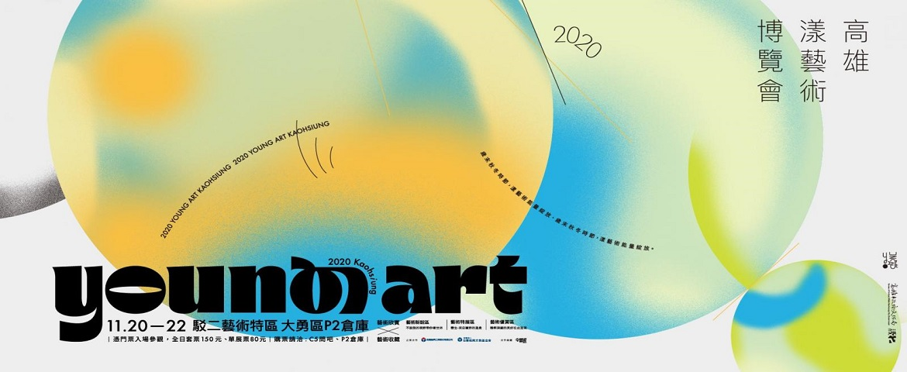
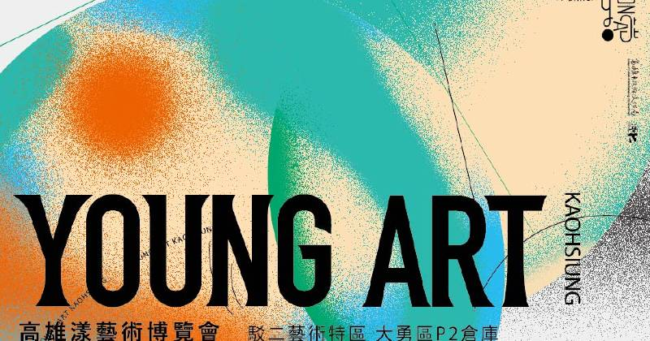
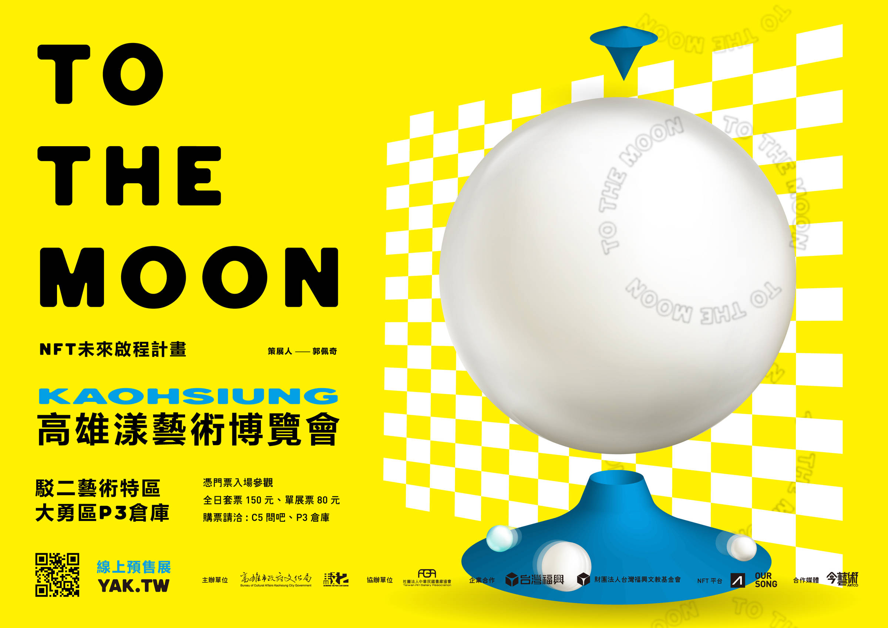

◼購票資訊: 單展票80元、套票150元(含駁二當代館C5、C7倉庫及舊事倉庫)。 一人一票，限同一人單日使用，展覽不限進場次數。 年齡6歲以下或身高115公分以下之幼童(主要以證件為主)， 與持身心障礙手冊及必要陪同者，請出示相關證明文件正本， 得免票進場。詳情請洽C5、P3售票點。 註:12歲以下(含)兒童，需成人購票陪同觀展。（詳情請至售票資訊頁面） |
◼實體展日期：2021.11.19(五)-21(日) |
◼實體展地點：駁二藝術特區大勇區P3倉庫 |
◼注意事項: 入場前須測量體溫、登錄實聯制資訊，並全程配戴口罩 |
◼主辦單位:高雄市政府文化局、駁二藝術特區 |
◼協辦單位:社團法人中華民國畫廊協會 |
◼企業合作:台灣福興工業股份有限公司、台灣福興文教基金會 |
◼合作媒體:今藝術 |
◼NFT平台:akaSwap、OurSong |
藝術新銳區 | 不設限的視野帶你看世界 |
藝術優賞區 | 精粹深藏的美好在此呈現 |
藝術特展區 | To The Moon-NFT未來啟程計畫 |
 |
 |
 |
策展論述： (經評審後選出) |
策展論述： (邀請曾參與過漾藝博的藝術家) |
策展論述： “To the Moon ”是流行於加密貨幣圈的一句網路迷因（meme）用語， 在加密藝術(Crypto Art)中，意指邁向虛擬世界全新未知的宇宙， 也有用於推升作品價格的意思。科技在不斷進化的過程中， 人類對於宇宙探險的慾望從來沒有間斷過， 「知」的慾望，加速了科技的進步， 在這快速的科技發展中，也深深的影響藝術表現的形式， 歷史上第一部科幻電影「月球旅行A trip to the moon」， 源自法國導演梅里哀（Marie-Georges-Jean Méliès）， 訴說著藝術家對於月球的想像， 人們乘坐太空梭撞上月亮的眼睛， 看似是對月亮純真的想像， 這個畫面也呼應到現在充滿多元創意的 網路藝術風潮-NFT(Non-Fungible Tokens)， 虛擬藝術儼然已成為數位藝術的下個進程。 現在，我們可以在元宇宙(Metaverse)上與虛擬世界的人們相見、 共同創作、交流等等，然而不久的將來，會如何發展？ 如何因應新時代的潮流？將會是新時代的課題。 「高雄漾藝術博覽會」首次跨平台 與兩個NFT平台AkaSwap 與OURSONG合作， 推出NFT線上展覽，參展藝術家橫跨多元領域， 有新媒體互動藝術、3D繪圖、擴增實境(AR)、插畫、動畫、 塗鴉與演算藝術等等，精彩豐富的藝術形式， 呈現虛擬藝術世界多元且開放的樣貌。 |